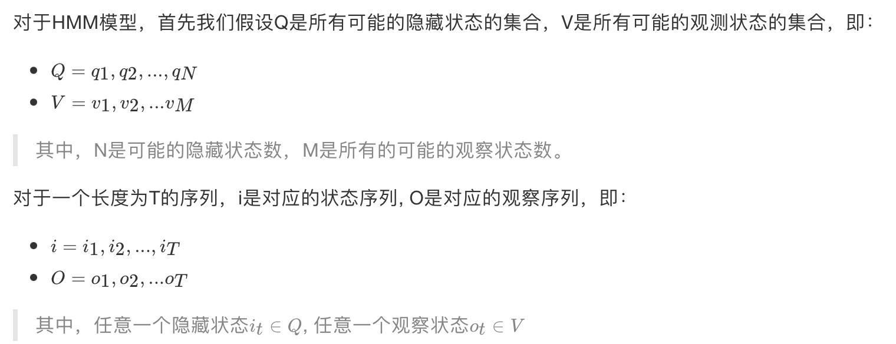
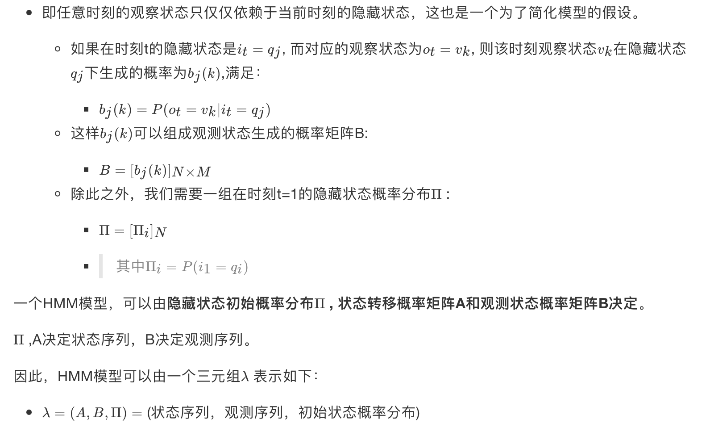
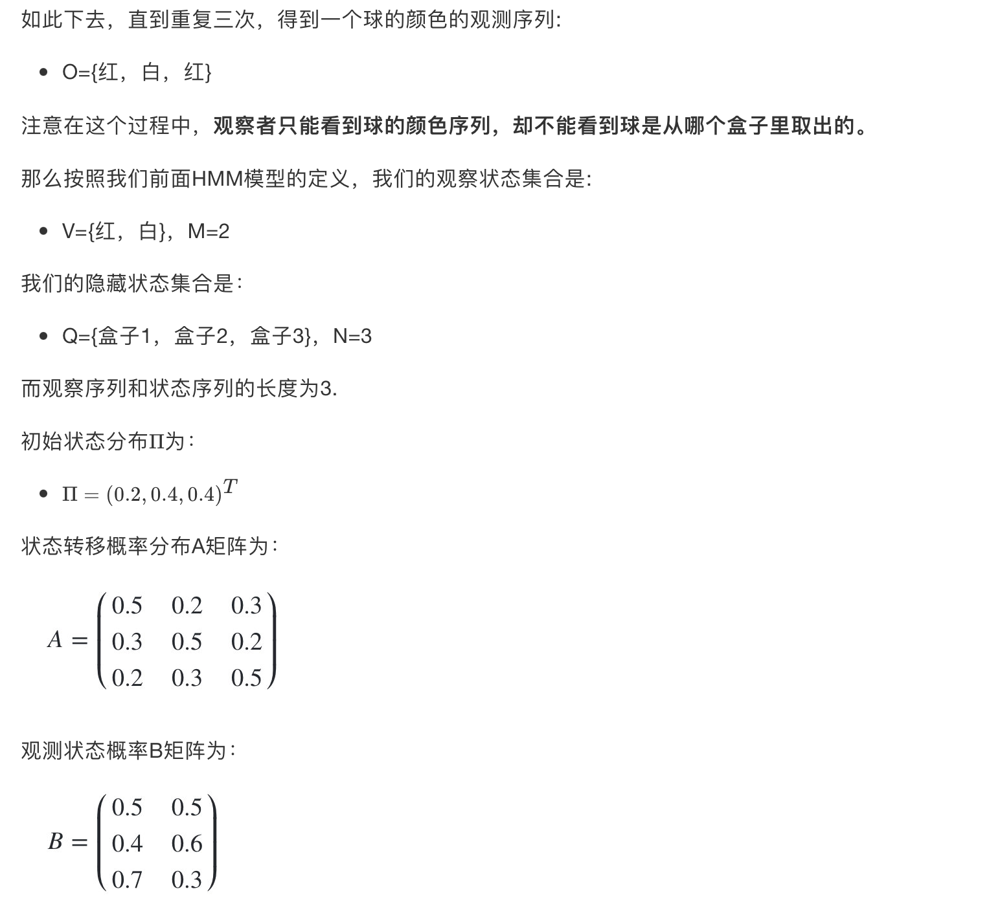

10.3 HMM模型基础
学习目标
- 了解HMM模型解决的问题的主要特征
- 知道HMM模型的两个重要假设
- 指导HMM观测序列的生成过程
- 知道HMM模型的三个基本问题
1 什么样的问题需要HMM模型
首先我们来看看什么样的问题解决可以用HMM模型。使用HMM模型时我们的问题一般有这两个特征：
- １）我们的问题是基于序列的，比如时间序列，或者状态序列。
- ２）我们的问题中有两类数据，
- 一类序列数据是可以观测到的，即观测序列；
- 而另一类数据是不能观察到的，即隐藏状态序列，简称状态序列。
有了这两个特征，那么这个问题一般可以用HMM模型来尝试解决。这样的问题在实际生活中是很多的。
- 比如：我现在给大家写课件，我在键盘上敲出来的一系列字符就是观测序列，而我实际想写的一段话就是隐藏状态序列，输入法的任务就是从敲入的一系列字符尽可能的猜测我要写的一段话，并把最可能的词语放在最前面让我选择，这就可以看做一个HMM模型了。
- 再举一个，假如我上课讲课，我发出的一串连续的声音就是观测序列，而我实际要表达的一段话就是隐藏状态序列，你大脑的任务，就是从这一串连续的声音中判断出我最可能要表达的话的内容。
从这些例子中，我们可以发现，HMM模型可以无处不在。但是上面的描述还不精确，下面我们用精确的数学符号来表述我们的HMM模型。
2 HMM模型的定义

HMM模型做了两个很重要的假设如下：
1） 齐次马尔科夫链假设。

2） 观测独立性假设。

3 一个HMM模型实例
下面我们用一个简单的实例来描述上面抽象出的HMM模型。这是一个盒子与球的模型。
案例来源于李航-《统计学习方法》。
假设我们有3个盒子，每个盒子里都有红色和白色两种球，这三个盒子里球的数量分别是：
| 盒子 | 1 | 2 | 3 |
|---|---|---|---|
| 红球数 | 5 | 4 | 7 |
| 白球数 | 5 | 6 | 3 |
按照下面的方法从盒子里抽球，开始的时候，
- 从第一个盒子抽球的概率是0.2，
- 从第二个盒子抽球的概率是0.4，
- 从第三个盒子抽球的概率是0.4。
以这个概率抽一次球后，将球放回。
然后从当前盒子转移到下一个盒子进行抽球。规则是：
- 如果当前抽球的盒子是第一个盒子，则以0.5的概率仍然留在第一个盒子继续抽球，以0.2的概率去第二个盒子抽球，以0.3的概率去第三个盒子抽球。
- 如果当前抽球的盒子是第二个盒子，则以0.5的概率仍然留在第二个盒子继续抽球，以0.3的概率去第一个盒子抽球，以0.2的概率去第三个盒子抽球。
- 如果当前抽球的盒子是第三个盒子，则以0.5的概率仍然留在第三个盒子继续抽球，以0.2的概率去第一个盒子抽球，以0.3的概率去第二个盒子抽球。

4 HMM观测序列的生成
从上面的例子，我们也可以抽象出HMM观测序列生成的过程。
输入的是HMM的模型 λ=(A,B,Π) ,观测序列的长度T
输出是观测序列：

生成的过程如下：
1）根据初始状态概率分布 Π 生成隐藏状态i1
2) for t from 1 to T
- a. 按照隐藏状态it的观测状态分布bit(k)生成观察状态ot
- b. 按照隐藏状态it的状态转移概率分布ait, it+1产生隐藏状态it+1
所有的ot一起形成观测序列
5 HMM模型的三个基本问题
HMM模型一共有三个经典的问题需要解决：
1）评估观察序列概率 —— 前向后向的概率计算
- 即给定模型 λ=(A,B,Π) 和观测序列
 ，计算在模型 λ下某一个观测序列O出现的概率P(O|λ )。
，计算在模型 λ下某一个观测序列O出现的概率P(O|λ )。 - 这个问题的求解需要用到前向后向算法，是HMM模型三个问题中最简单的。
2）预测问题，也称为解码问题 ——维特比（Viterbi）算法
- 即给定模型λ=(A,B,Π) 和观测序列，求给定观测序列条件下，最可能出现的对应的状态序列。
- 这个问题的求解需要用到基于动态规划的维特比算法，是HMM模型三个问题中复杂度居中的算法。
3）模型参数学习问题 —— 鲍姆-韦尔奇（Baum-Welch）算法(状态未知) ，这是一个学习问题
- 即给定观测序列，估计模型 λ=(A,B,Π) 的参数，使该模型下观测序列的条件概率P(O|λ )最大。
- 这个问题的求解需要用到基于EM算法的鲍姆-韦尔奇算法，是HMM模型三个问题中最复杂的。
接下来的三节，我们将基于这个三个问题展开讨论。
3 小结
- 什么样的问题可以用HMM模型解决
- 基于序列的，比如时间序列；
- 问题中包含两类数据，一类是可以观测到的观测序列；另一类是不能观察到的隐藏状态序列。
- HMM模型的两个重要假设
- 其次马尔科夫链假设
- 观测独立性假设
- HMM模型的三个基本问题
- 评估观察序列概率—— 前向后向的概率计算
- 预测问题，也称为解码问题 ——维特比（Viterbi）算法
- 模型参数学习问题 —— 鲍姆-韦尔奇（Baum-Welch）算法